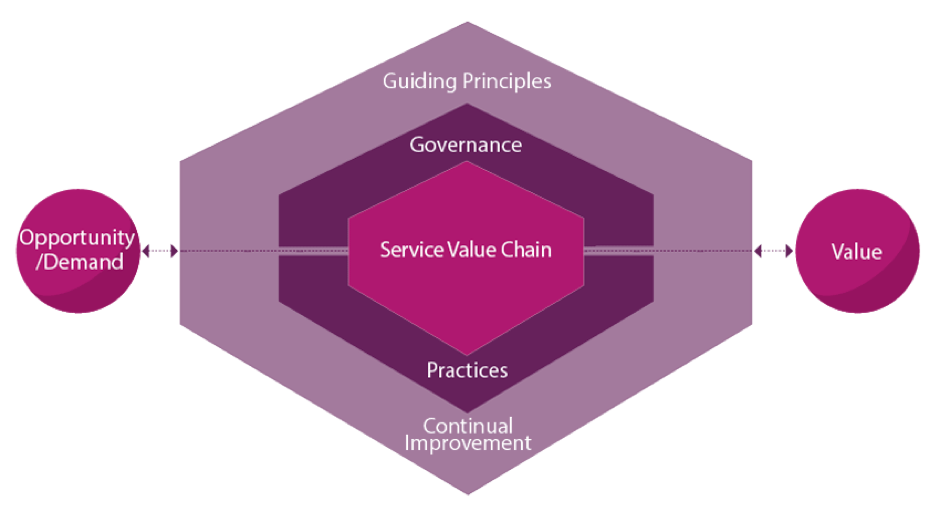
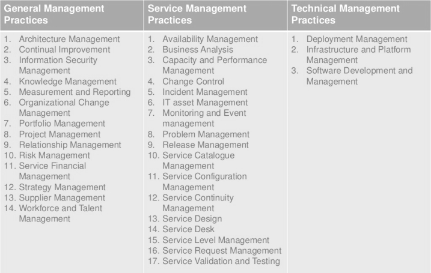
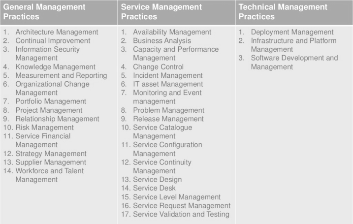

+ - key concepts of service mgmt
value and value co-creation
- key
- purpose of organisation is to create value for stakeholders
- value is co-created thru' active collaboration between providers and consumers
org, service providers,
service consumers,
and other stakeholders
- key
-
when provisioning services, org takes on role of service provider;
the provider can be external to consumer org or both are part of same org
when receiving services, org takes on role of service consumer
-
products and services
- key
services org provides based on one or more products
org own or have access to variety of resources
- people
- information & technology
- value streams and processes
- partner and suppliers
products are configuration of resources created by org that potentially be value to customers
service providers present their services to consumers in the form of service offerings
service relationships
- key
- established between 2 or more org to co-create value
- org takes on roles of service providers or consumers
- org typically both provide and consume a number of services at any given time
- service relationship model
- services delivered by provider ->
- create new resources for service consumer ->
- create products, becoming service provider
- or modify existing services
- create new resources for service consumer ->
- services delivered by provider ->
value: outcomes, costs and risks
- key
- achieving desired outcomes requires resources and often associated with risks
- service providers help consumers achieve outcomes
- take on some associated risk and cost
- service relationships can introduce new risks and costs
- negatively affect some of intended outcome
- while supporting some outcome
- $ cost
- cost removed from consumer by the service
- costs of staff
- technology
- other resources which consumer does not need to provide
- cost imposed on consumer by the service
- total cost of consuming a service
- price charged by service provider
- other costs (example)
- staff training
- cost of network utilisation
- procurement
- what consumers have to 'invest' to consume the service
- total cost of consuming a service
- cost removed from consumer by the service
- risk
- risk removed from consumer by the service
- failure of consumer's server hardware
- lack of staff availability
- consumer may determine this reduction is sufficient to support the value proposition
- risk imposed on consumers by the service
- service provider ceasing to trade
- security breach
- consumer contributes to risk reduction by
- actively participate the definition of requirements of service and clarification of outcomes
- clearly communicate critical success factors (CSFs) and constraints that apply to the service
- ensure provider has assess to necessary resources of consumer throughout the service relationship
- risk removed from consumer by the service
- key
+ - four dimensions model
- key
- holistic approach to service mgmt
- facilitation of value for customers and other stakeholders
- represent perspectives relevant to SVS
- constrained or influenced by external factors (often beyond control of SVS)
- organisation and people
- key
- as org complexity grows, it is important to ensure ->
- the way org is structured and managed
- roles responsibilities
- system of authority
- communication
- -> are well defined & supports org overall strategy and operating model
- culture, required staffing and competencies
- as org complexity grows, it is important to ensure ->
- key
- information and technology
- key
- information and knowledge necessary for management of services
- technologies required as well
- incorporates relationship between different component of SVS
- input and outputs of activities and practices
- information and knowledge necessary for management of services
- cloud computing
-
ITSM -> cloud computing changes service architecture and the distribution of responsibilities between service consumers, providers and partners
affect multiple service providers' practices
enables faster deployment
- important prerequisite -> success of Devops (similar initiatives)
-
- key
- partners and suppliers
- key
- encompasses an org's relationship with other orgs
- design
- development
- deployment
- delivery
- support
- and/or continual improvement of services
- incorporates contracts and other agreement
- between the org and its partners and suppliers
- encompasses an org's relationship with other orgs
- factors when using suppliers
- strategic focus
- corporate culture
- resource scarcity
- cost concerns
- subject matter expert
- external constraints
-
government regulation or policy
industry codes of conduct
social / political or legal constraints
-
- demand pattern
- key
- value streams and processes
- key
-
concerns with how various part of org works in an integrated and coordinated way
to enable value creation thru' products and services
focuses on what activities org undertakes and how they are organised
how org ensures it is enabling value creation for
all stakeholder efficiently and effectively
-
- value stream
- combination of org's value chain activities
- process
- describes what is done to accomplish an objective
- well defined processes can improve productivity within and across org
- usually detailed in procedure
which outline who is involved in the process
work instructions which explain how they are carried out
- questions
- what is the generic delivery model for the service, and how does the service work?
- what are the value streams involved in delivering the agreed outputs of the service?
- who, or what, performs the required service actions?
- key
- external factors
- PESTEL
- political
- economical
- social
- technological
- environmental
- legal
- PESTEL
service value system (SVS)
- + -
overview
- key
-
describes how all components and activities of the org works together
as a system to enable value creation
each org SVS interfaces with other orgs
forming ecosystem that facilitate value for ->
- org
- customer
- stakeholders
-
- inputs
- opportunity and demand
- elements
- org governance
- service mgmt
- continual improvement
- org capabilities & resources
- ouput
- achievement of org objectives
- value for org
- org customers
- other stakeholders
- outcome
- creation of value
- org agility
-
ability to move & adapt quickly,
flexibly and decisively support internal changes
- change in scope of org
- mergers and acquisitions
- changing org practices
- technologies requiring different skills or org structure
- changes to relationship with partners and suppliers
-
- org resilience
-
ability to anticipate, prepare for,
response to, and adapt to
- incremental changes
- sudden disruption
- from an external perspective
-
- key
- + -
opportunity, demand and value
- key
triggers activities within ITIL SVS
leads to creation of value
always entering SVS, but org does not automatically
accept all opportunities or satisfy all demands
- opportunities
-
represent options or possibilities
to add value for
- stakeholders
- improve org
-
- demand
-
represent need or desire for
products and services from
- internal customer
- external customer
-
- key
- components
- + -
Guiding principles
- key
-
recommendation that guides org
in all circumstances
- changes in goals
- strategies
- type of work
- management structure
it is universal and enduring
-
- principles
- focus on value
- key
-
all activities conducted by org
should link back directly or indirectly
- to value for itself
- its customers
- other stakeholders
-
- who is the service consumer
- consumer's perspective of value
- customer experience
- key
- start where you are
- key
-
in the process of eliminating old unsuccessful methods or service,
there can be temptation to remove what was done in the past and
build something completely new
- extremely wasteful
- in terms of time
- loss of existing services
- loss of process
- loss of people
- loss of tools
do not start over without first considering
what is already available to be leverage
- extremely wasteful
-
- assess where you are
- the role of measurement
-
'when a measure becomes a target,
it ceases to be a good measure' --- Goodhart's law
-
- key
- progress iteratively with feedback
- key
- resist temptation to do everything at once
- organising work into smaller manageable sections
- which can be executed and completed in timely manner
- focus on each effort will be sharper and easier to maintain
- the role of feedback
- iteration and feedback together
- key
- collaborate and promote visibility
- key
- when initiatives involves the right people in the correct roles
efforts benefit from better buy-in
more relevance
(better information available for decision making)
increased likelihood of long-term success
- when initiatives involves the right people in the correct roles
- whom to collaborate with
- communication for improvement
- increasing urgency through visibility
- key
- think and work holistically
- key
no service practice process department or supplier stands alone
outputs org delivers to itself, its customers, and other stakeholders will suffer
unless it works in an integration way to handle its activities as a whole
all org activities should focus on the delivery of value
- key
- keep it simple and practical
- key
-
Always use the minimum number of steps
to accomplish an objective
Outcome based thinking to produce
practical solution that deliver valuable outcomes
if process, service, action, or metric
fails to provide value or produce useful outcome,
eliminate it
-
- judging what to keep
- conflicting objectives
- key
- optimise and automate
- key
-
org must maximise value of work carried out
by human and technical resources
four dimension model provide holistic view
that should be considered when
designing, managing, or operating an org
technology
helps org scale up and take on frequent and repetitive tasks
allow human resources for more complex decision-making
should not always be relied upon without human intervention
as automation for automation sake,
increase cost and
reduce org robustness and resilience
-
- road to optimisation
agreeing org vision & objective
assess current state of proposed optimisation
- agree future state of org
focus on simplification and value
- standardisation of practice
has appropriate level of
stakeholder engagement and commitment
execute improvement with feedback
continual monitoring of optimisation impact
- using automation
- key
- focus on value
- key
- + -
Governance
- key
- every org is directed by a governing body
- all org perform governance activities
- governing body
- board of directors
- executive managers
- take on separate governance role when performing governance activities
- accountable for org complance with policies and any external regulations
- governing in SVS
- service value chain and org practices
- in line with direction by governing body
- governing body maintains oversight of SVS (directly or thru delegation)
- maintain alignment thru clear set of shared principles and objectives
- governance are continually improved
- service value chain and org practices
- key
- + -
Service value chain
- key
6 activities represent step org undertake in creation of value
each activity transforms inputs into outputs
- input can be demand outside of value chain or output of other activities
all activities are interconnected, each receiving and providing triggers for further action
- common rules
-
all incoming and outgoing interactions with parties external to value chain are perform via engage
all new resources are obtained via obtain/build
planning at all levels is performed via plan
improvement at all levels are initiated and managed via improve
-
- activities
- plan
- key
-
purpose ->
to ensure a shared understanding of
- vision
- current status
- improvement direction
- four dimensions
- all products & services across org
-
- key
- improve
- key
-
purpose ->
to ensure continual improvement
- products
- services
- practices across all value chain activities
- four dimensions of service mgmt
-
- key
- engage
- key
-
purpose ->
to provide good understanding of
- stakeholder needs
- transparency
- continual engagement
- good relationship with stakeholders
-
- key
- design and transition
- key
-
purpose ->
to ensure that products and services
continually meet
stakeholder expectations for
- quality
- cost
- time to market
-
- key
- obtain/build
- key
-
purpose ->
to ensure service components are available
- when and where they are needed
- meet agreed specification
-
- key
- deliver and support
- key
-
purpose ->
to ensure service are delivered and supported
according to agreed specification and stakeholder expectation
-
- key
- plan
- key
- Practices
- + -
key
- general mgmt practices
- adopted & adapted from general business mgmt domains for
- service mgmt
- adopted & adapted from general business mgmt domains for
- service mgmt practices
- developed in service mgmt and ITSM industries
- technical mgmt practices
- adapted from technology mgmt domains for
- service mgmt purposes
- expanding or shifting focus from technology solution to IT services
- service mgmt purposes
- adapted from technology mgmt domains for
- general mgmt practices
- general mgmt practices
- + -
architecture mgmt
- key
provides understanding
- all elements of org
- how these elements interrelate
enables org to effectively achieve current and future objectives
provides principles, standards and tools to
manage complex changes
in a structure and Agile way
- types
business
-
allows org to look at its capabilities in terms
of how they align with all the detailed activities
to create value for org and its customers
service
- a view of all services org provides
interactions between services
service models that describe
structure & dynamics of each service
information systems,
including data & application
- describes logical & physical
- data assets
- data mgmt resources
- shows how information resources
- managed
- shared
- information ->
- valuable asset of org
- with actual & measurable value
- basis of decision making
- must be ->
- complete
- accurate
- accessible to those authorised
technology
- defines software and hardware infrastructure
- support portfolio of products and services
environment
- describes
- external factors impacting org
- drivers for change
- aspects, types and levels of environment control & their mgmt
- includes
- developmental
- technological
- business
- operational
- organisational
- political
- economi
- legal
- regulatory
- ecological
- social influences
-
- key
- + -
continual improvement
- key
- to align org practice and services
with changing needs
thru' ongoing improvement of
product, services and practices, or any elements
in mgmt of products and services
- to align org practice and services
- continual improvement register (CIR)
- key
- + -
information security mgmt
- key
-
to protect information needed by org
to conduct its business
understanding and managing risks to
- confidentiality
- integrity
- availability of information
- other aspects
- authentication
- non-repudiation
-
- prevention
- detection
- correction
- key
- + -
knowledge mgmt
- key
-
to maintain and improve the
effective, efficient and convenient
use of information and knowledge
across org
-
- key
- + -
measurement and reporting
- key
- to support good decision-making
- continual improvement by decreasing level of uncertainty
- thru' ->
- collection of relevant data on various managed objects
- valid assessment of data in appropriate context
- managed objects ->
- products and services
- practices
- value chain activities
- teams and individuals
- suppliers and partners
- org as a whole
- KPIs and behaviour
- reporting
- key
- + -
organisational change mgmt
- key
- to ensure changes in org are smoothly and successfully implemented
- achieved by managing the human aspects of change
- activities
- creation of urgency
- clear and relevant objectives
- willing and prepared participants
- stakeholder mgmt
- willing and prepared participants
- sponsor mgmt
- strong and committed leadership
- communication
- willing and prepared participants
- empowerment
- willing and prepared participants
- resistant mgmt
- willing and prepared participants
- reinforcement
- sustained improvement
- creation of urgency
- key
- + -
portfolio mgmt
- key
- to ensure org has right mix of
- programmes
- projects
- products
- services
- to execute org strategy within funding and resource constraints
- to ensure org has right mix of
- portfolio
- product / service
- project
- customer
- relationship mgmt practice
- key
- + -
project mgmt
- key
-
to ensure all projects in org
are successfully delivered
planning
delegating
monitoring
maintaining
all aspects of a project
keeping motivation of
people involved
-
- approach
- waterfall
- agile
- key
- + -
relationship mgmt
- key
-
to establish and nurture links
between org and stakeholders
at strategic and tactical levels
identification
analysis
monitoring
continual improvement of relationship
with and between stakeholders
-
- key
- + -
risk mgmt
- key
- to ensure org understands and effectively handles risk
- ensuring ongoing sustainability of org and creating value for customers
- integral part of all org activities
- central to org SVS
- risk needs to be
- identified
- assessed
- treated
- principles
- risk is part of business
- risk mgmt must be consistent across business
- risk mgmt culture and behaviours are important
- ISO 31000
- purpose of risk mgmt is creation and protection of value
- improves performance, encourages innovation and supports the achievement of objectives
- key
- + -
service financial mgmt
- key
- to support org strategies and plans for service mgmt
- ensuring org financial resources and investments are used effectively
- activities
- budgeting / costing
- focus on predicting and controlling income and expenditure
- accounting
- charging
- all services require funding model
- budgeting / costing
- key
- + -
strategy mgmt
- key
-
to formulate goals of org and
adopt courses of action and
allocation of resources necessary
for achieving goals
establishes ->
- org direction
- focus effort
- defines or clarifies org priorities
- provide consistency or guidance in response to environment
-
- key
- + -
supplier mgmt
- key
- to ensure org suppliers and their performances are managed appropriately
- to support seamless provision of quality product and services
- create closer more collaborative relationships with key suppliers
- to uncover and realise
- new value
- reduce risk of failure
- to uncover and realise
- to ensure org suppliers and their performances are managed appropriately
- central practices
- creating a single point of visibility & control consistency
- maintaining supplier strategy, policy and contract mgmt information
- negotiating and agreeing contracts and arragements
- procurement mgmt
- performance mgmt
- managing relationships and contracts with internal and external suppliers
- managing supplier performance
- relationships
- insourcing
- developed / delivered internally
- outsourcing
- external suppliers providing products and services previously provided internally
- involves substitution
- single source or partnership
- single supplier suppling all services directly
- external service integrator
- managing all suppliers
- integrates their service on behalf of org
- multi-sourcing
- procurement from more than on independent suppliers
- insourcing
- evaluation and selection of suppliers
- importance and impact
- risk
- costs
- activities
- supplier planning
- business analysis
- portfolio mgmt
- service design
- service level mgmt
- evaluation of suppliers and contracts
- supplier and contract negotiation
- supplier categorisation
- supplier and contract mgmt
- warranty mgmt
- performance mgmt
- contract renewal and/or termination
- supplier planning
- service integration
- focus on end-to-end provision of service
- ensure control of all interfaces and outcomes
- key
- + -
workforce and talent mgmt
- key
-
to ensure org has right pple
with appropriate skills and knowledge
and in correct roles to
support business objectives
focus on successfully engaging with org
employees and people resources
-
planning, recruitment, onboarding,
learning and development,
performance measurement,
and succession planning
plays critical roles in organisational velocity
-
-
- activities
- workforce planning
- translate org strategy / objective -> org capabilities -> competencies / roles
- recruitment
- performance measurement
- personal development
- learning and development
- mentoring and succession planning
- workforce planning
- key
- + -
architecture mgmt
- service mgmt practices
- + -
availability mgmt
- key
-
to ensure services deliver agreed levels of availability
to meet the needs of customers and users
-
- activities
- negotiating and agreeing achievable targets
- design infrastructure and applications that deliver required SLA
- ensuring services and components can collect data to measure availability
- monitoring, analysing and reporting
- planning improvement
- measurements
- Mean time between failures (MTBF)
- Mean time to restore service(MTRS)
- user outage minutes
- number of lost transaction
- lost business value
- user satisfaction
- key
- + -
business analysis
- key
-
to analyse a business or
some element of it
define its associated needs
recommend solutions to address needs
and/or solve business problem
faciliates value creation for stakeholders
enables org to communicate its needs in a meaningful way,
express rationale for change
and design / describe solutions that
enable value creation in alignment with org objectives
-
- activities
- analysing
- business system
- business process
- services
- architecture
- identifying / prioritising
- SVS
- services / products improvement
- innovation opportunities
- evaluating / proposing actions
- create desired improvement
- IT system change
- process change
- org structure change
- staff development
- documenting business requirement
- analysing
- business requirement
- warranty focus
- utility focus
- key
- + -
capacity & performance mgmt
- key
-
to ensure services achieve
agree and expected performance,
satisfying current and future demand
in a cost-effective way
-
- activities
service performance & capacity analysis
- research / monitoring current service performance
- capacity / performance modelling
service performance & capacity planning
- capacity requirement analysis
- demand forecasting & resource planning
- performance improvement planning
- key
- + -
change control
key
-
to maximise number of successful
service and product changes
by ensuring ->
risk properly assessed
authorising changes to proceed
managing change schedule
change authority
- person or group who authorise a change
change
- standard change
low risk, pre-authorised
- well understood / fully documented
- can be implemented without additional authorisation
initiated as service request
when procedure of standard change
is created or modified
-
full risk assessment and authorisation
as any other changes
when implement standard change
- risk assessment need not to be repeated
-
only required
when modification to the way
change is carried out
-
- well understood / fully documented
- normal change
changes need to be ->
- schedule
- assessed
- authorised
- following process
change model
- minor / low risk
-
rapid decision from change authority
often using automation to speed up change
-
- major
-
mgmt board or equivalent as change authority
-
triggered by creation of change request
- emergency change
implemented ASAP
- resolve incident
- security patch
typically not included in change schedule
process of assessment / authorisation is expedited
should subject to same testing, assessment and authorisation
acceptable ->
- defer documentation
- less testing
separate change authority for emergency change
- smaller number of senior manager
-
- + -
incident mgmt
- key
-
to minimise the negative impact of incidents
by restoring normal service operation
as quickly as possible
-
- incident groups
-
users
- using self help
service desk
support team
- routing based on incident category
suppliers / partners
- offers support for their products / services
temporary team
- most complex / major incident
- include ->
- stakeholders
- service provider
- suppliers
- users
may invoke disaster recovery plans
-
- swarming
- involves many different stakeholders working together initially
- until its clear which stakeholder is best placed to continue and which move on to other tasks
- key
- + -
asset mgmt
- key
- to plan & manage full lifecycle of IT assets
- help org
- maximise value
- control costs
- manage risk
- support decision making
- purchase
- re-use
- retirement
- disposal of assets
- meet regulatory and contractual requirement
- types
- asset mgmt
-
acquisition, operation,
care, and disposal
org assets,
particularly critical infrastructure
-
- IT asset mgmt (ITAM)
sub practice of asset mgmt
managing lifecycle and
total costs of
IT equipment and infrastructure
- software asset mgmt (SAM)
aspect of IT asset mgmt
acquisition, development,
release, deployment,
maintenance, and eventual retirement
of software asset
effective mgmt, control,
and protection
of software assets
- asset mgmt
- IT asset mgmt requirements
-
hardware asset must be
labelled for clear identification
software asset must be protected from
unlawful copying / unlicensed use
cloud-based assets must be assigned
to specific product or groups
client assets must be assigned to individuals
who take responsibility for their care
-
- maintains
- asset register
- inventory information
- structure / content
- storage facilities
- configuration mgmt system (CMS)
- asset info
- costs
- contracts
- asset register
- activities
- define, populate, and maintain asset register
- control asset lifecycle and record changes to assets
- provide current / historical data / report
- audit and conformity
- drive corrective and preventive improvements
- key
- + -
monitoring and event mgmt
- key
-
to systematically observe
service and service components,
and record & report
selected changes of state
identified as events
identified / prioritise events ->
- infrastructure
- services
- business processes
- information security
establishes appropriate response to events
- conditions to potential faults or incidents
-
- event classification
- informational
- warning
- exception
- activities
-
identify monitoring strategy and
what to monitor ->
- services
- systems
- configuration items (CI)
- service components
implementing / maintaining monitoring
- leverage native feature
- use of designed-for-purpose tools
establishing / maintaining thresholds / criteria
establishing / maintaining policies to handle events
implementing processes and automation
- operationalise defined
- threshold
- criteria
- policies
-
- key
- + -
problem mgmt
- key
- to reduce likelihood and impact of incident
- identifying actual and potential causes of incident
- managing workarounds and known errors
- to reduce likelihood and impact of incident
- phrase
-
problem identification ->
problem control ->
error control
- problem identification
- activities
- trend analysis of incidents
- detection of duplicate / recurring issues
- major incident mgmt
- identify risk of incident recurring
- analysing information received
- suppliers and partner
- internal software developers
- test teams
- project teams
- activities
- problem control
- problem analysis
- documenting
- workarounds
- known errors
- consider all contributory causes
- duration / impact of incident
- causes led to incident happening
- error control
manage known errors
identification of
potential permanent solution
-
resulting in change request
-
justified by
cost,
risk,
benefits
-
regularly re-assess
status of known errors
- overall impact on customers
- availability
- cost of permanent resolution
- effectiveness of workarounds
- evaluate everytime is used
-
- problem identification
-
- interface between practices
-
can be organised as risk mgmt cases
initiate change
via change request
-
participate post-implementation review
approving and implementing change
is out of problem mgmt scope
output ->
information / documentation concerning
workarounds / known errors
- utilises knowledge mgmt
identify improvement opportunities
- included in continual improvement register (CIR)
- continual improvement technique used
- part of product backlog
-
-
- key
- + -
release mgmt
- key
- to make new and changed services and features available for use
- actions
- release plan
- release schedule
- release post implementation review
- staging
- blue / green release
- uses 2 mirrored production environments
- feature flag
- new functionality deployed to production without being released
- user configuration setting releases new functionality to individual user
- blue / green release
- key
- + -
service catalog mgmt
- key
-
to provide
single source of
consistent information on
all services and service offerings,
and to ensure it is available to relevant audience
-
- tailored view
user view
- provisioning details
customer view
- service level
- financial performance
- service performance
IT to IT customer view
- technical
- security
- process information for service delivery
request catalogues
-
focus on
consumable or orderable elements
of service offering
- key
- + -
service configuration mgmt
- key
-
to ensure
accurate and reliable information
about configuration of services,
and the CIs supporting them
(available when and where is needed)
include information on
how CIs are configured and
the relationship between them
-
- tools
- configuration mgmt system (CMS)
- configuration mgmt database (CMDB)
-
configuration records
-
- infrastructure as code
- configuration mgmt
-
identify new CIs, add them to CMS
update configuration data
verify configuration records
audit application and infrastructure
- identify any not documented
-
- key
- + -
service continuity mgmt
- key
- to ensure availability and performance of service
-
maintained at sufficient levels in case of disaster
-
- provide framework for building org resilience
-
capability of producing
effective response that safeguards interests of stakeholders and
org reputation, brand, and value-creating activities
-
- supports business continuity mgmt (BCM)
- to ensure availability and performance of service
- risk mgmt conditions
- disaster source
- stakeholders involved
- org impact
- service continuity vs incident mgmt
-
distinction between disasters, major incidents and incidents
needs to be pre-defined, agree and documented
with clear thresholds and triggers
for calling the next tier of response and recovery into action
without unnecessary delay and risk
-
- key
- + -
service design
key
-
to design products and services that
fit for purpose,
fit for use,
and can be delivered by org and its ecosystem
includes planning and organising
- people, partners and suppliers
- information, communication, technologies
- practices for new or changed products and services
- interaction between org and its customers
focus on
customer experience (CX) and
user experience (UX)
result in customer-centred products and services that include stakeholder in design activities
consider entire environment of product or service
enable more accurate estimation
- cost
- timing
- resource
- risk
result in higher volume of successful change
make design methods easier to adopt and follow
enable service design assets shared and re-used
increase confidence of changes without unexpectedly affecting other products, services, or stakeholders
ensure changes will be maintainable and cost-effective
consider impact on
- other products and services
- all parties including customers and suppliers
- existing architecture
- required technology
- service mgmt practices
- necessary measurements and metrics
supports products and services that
- business-and customer-oriented, focused, and driven
- cost effective
- meet information and physical security requirement of org and external customer
- flexible and adaptable, yet fit for purpose at point of delivery
- absorb ever-increasing demand in volume and speed of change
- meet increasing org and customer demands for continuous operation
- managed and operated to acceptable level of risk
design thinking activities
- inspiration and empathy
- direct observation of people and how they work or interact with products and services
- identifying how they might interact differently with other solutions
- ideation
- combine divergent and convergent thinking
- divergent thinking ->
- ability to offer different, unique or variant ideas
- ensures many possible solutions are explored
- convergent thinking ->
- ability to find preferred solution to a given problem
- narrows ideas down to final preferred solution
- prototyping
ideas are tested early, iterated, and refined
prototype helps gather feedback and improve idea
prototype speed up process of innovation by allowing service designers to better understand the strengths and weaknesses of new solution
- implementation
- concepts are brought to life
- coordinated with all relevant service mgmt practices and other parties
- Agile methodologies can be employed to develop and implement solution in iterative way
- evaluation
- in conjunction with other practices
- project mgmt
- release mgmt
- measures actual performance of product or service implementation
- to ensure acceptance criteria are met, and to find any opportunities for improvements
- in conjunction with other practices
Lean user experience (Lean UX)
- embrace Lean-Agile methods
- implement functionality in minimum viable increments
- determine success by measuring results against an outcome hypothesis
- focus on obtaining feedback as early as possible, to make quick decision
- questions to ask
- Who are the customers?
- What is it used for?
- When it is used and under what circumstances?
- What is the most important functionality?
- What are the biggest risk
- team to prioritise by the risks they represent to the org and its customers
risk mgmt is embedded within all design process and activities
-
- + -
service desk
- key
- to capture demand for incident resolution and service request
- should also be the entry point and single point of contact for service providers with all its users
- channel of access
phone calls
- interactive voice response (IVR)
- conference call
- voice recognition
service portals and
mobile applications
-
supported by service and request catalogues
and knowledge bases
chat
- live chat
- chat bots
email for logging and updating,
and for follow-up surveys
and confirmations
-
unstructured email
difficult to process
-
AI and machine learning
can address this
-
walk-in service desk
- where high peaks activity demands physical presence
text and social media messaging
- useful for notification
- contacting specific stakeholder groups
- allow users to request support
public and corporate social media
and discussion forums
-
contacting service provider
and peer-to-peer support
- supporting technologies
intelligent telephony system
- computer-telephony integration
- IVR
- automatic call distribution
workflow system
- routing
- escalation
workforce mgmt &
resource planning systems
knowledge base
call recording & quality control
remote access tools
dashboard & monitoring tools
configuration mgmt systems
- key
- + -
service level mgmt
key
to set clear business-based targets for service levels
to ensure delivery of services is
properly assessed, monitored,
and managed
against these targets
service level mgmt
-
established a shared view of services
and target service level with customers
ensures org meets
defined service levels
thru ->
- collection
- analysis
- storage
- reporting
- of relevant metrics of identified services
performs service review
-
ensure current set of services
continues to meet the needs
of org and its customers
captures and reports
on service issues
-
includes performance against
defined service levels
service level agreements
requirement
must relate to defined 'service' in service catalogue
should relate to defined outcomes
and not simply operational metrics
should reflect an 'agreement'
-
i.e. engagement and discussion between
service provider and service consumer
must be simply written and
easy to understand and
use for all parties
-
watermelon SLA
- SLA may appear green on the outside but actually red inside
- without business context, metrics are often meaningless
information source
- customer engagement
- initial listening
- discovery
- information capture
- base metrics
- measurement
- progress discussion
- customer feedback
- survey
- key business-related measures
- operational metrics
-
low level indicators
of operational activities
- system availability
- incident response & fix time
- change and request processing time
- system response time
-
- business metrics
-
any business activity
deemed useful or valuable
by customer
-
- + -
service request mgmt
- key
-
to support the agreed quality of service by
handling all pre-defined, user initiated service requests
in effective and user-friendly manner
-
- components
- request for service delivery action
- i.e. reports or goods
- request for information
- request for provision of resource or service
- i.e. providing laptop, vm etc
- request for access to resource or service
- feedback, compliments and complaints
- request for service delivery action
- guidelines
request and fulfilment should be standardise and automated to greatest degree
policies should be established
-
what service request to fulfilled with limited or no additional approval
so that fulfilment can be streamlined
expectation of users on
fulfilment time
should be clearly set
- based on what org can realistically deliver
opportunities for improvement should be identified and implemented
policies and workflow should be included for
documenting and
redirecting of request submitted as service request
-
- key
- + -
service validation and testing
key
- to ensure new or changed products and services meet defined requirements
- definition of service value
based on input from ->
- customers
- business objectives
- regulatory requirements
documented as part of
value chain activity of
design and transition
inputs used to establish measureable quality and performance indicators
that support definition of assurance criteria and testing requirements
service validation
- focus on establishing deployment and release mgmt acceptance criteria
- establish, verify, and document both utility- and warranty-focused service assurance criteria
- form basis for scope and focus of testing activities
testing
- utility / functional
- unit test
- system test
- software
- platform
- integration test
- regression
- performance and capacity test
- security test
- compliance test
- operational test
- backup
- event monitoring
- failover
- recovery
- report
- warranty requirement test
- verification of ->
- documentation
- training
- support model definition
- knowledge transfer
- verification of ->
- user acceptance
- + -
availability mgmt
- technical mgmt practices
- deployment mgmt
- key
-
to move new or changed
hardware, software,
documentation, processes,
or any other components
to live environment
involve deploying components to
other environment for testing or staging
-
- approach
- phased deployment
deploy just part of production environment at a time
- i.e. office / country
operation repeated as many times as needed
until deployment is complete
- continuous delivery
- integrated, tested, deployed when needed
- providing frequent feedback opportunities for customer feedback loops
- big bang deployment
deploy to all targets at the same time
needed when dependencies prevent the simultaneous use
of both old and new components
- i.e. database schema change
- pull deployment
changes made available in a controlled repository
user download software to client devices
user control timing of updates,
can be integrated with service request mgmt
to enable users to request software only when needed
- phased deployment
- key
- infrastructure and platform mgmt
key
to oversee infrastructure and platforms used by org
enables
monitoring of technology solutions available to org,
including technology of external service providers
cloud service models
- Software-as-a-Service (SaaS)
-
use application without having to
control / manage underlying cloud infrastructure
-
- Platform-as-a-Service (PaaS)
consumer deploy onto cloud resources
have control over deployed applications and
configuration settings for host environment
- Infrastructure-as-a-Service (IaaS)
-
consumer get processing, storage, and/or
any other computing resources
-
cloud service
deployment models
- private cloud
- may locate within or outside org
- used exclusively by specific org
- can have one or more consumers
- normally managed and owned by an org, provider or both
- public cloud
located on cloud provider premises
provision for open use
may be owned, managed, and operated
by any org interested in it
- community cloud
-
may be owned, managed, and operated
by one or more stakeholders in community
may exist on or off org premise
meant to support and share
a collection of cloud service
customers ->
- with same requirements
- who have a relationship with one another
-
- hybrid cloud
-
a composition of two or more
distinct cloud infrastructure
(private, community, or public)
that remain unique entities
-
but bound together by standardised or proprietary technology
that enables data and application portability
-
-
ITIL practice and
cloud computing
- joined-up approach covering strategic, tactical, and operational, is required
- other ITIL practices
- service financial mgmt
- fiscal planning
- OPEX preferred over CAPEX
- cost grows as more parts of business uses
- IT cost model must be adjusted
- OPEX preferred over CAPEX
- help to determined techniques and controls
- to ensure org does not run out OPEX unexpectedly
- fiscal planning
- supplier mgmt
-
ensure areas such as
IT security, data protection, and regulatory compliance
are routinely assessed prior to onboarding new cloud offering
-
- capacity and performance mgmt
- coupled with service financial mgmt
- establish and monitor budgets
- threshold tracked and warning published if upswing in demand
- change control
boundaries to be redefined
-
cloud service providers
make changes with
minimal customer involvement
and no customer approval
will need to make far greater use
of standard change
to unlock benefits of cloud platform provide
-
- incident mgmt
-
change from knowing how to fix inhouse issues ->
to knowing which service is supported by which cloud provider,
and knowing what information to provided to resolve issue
-
- deployment mgmt
-
ability to safely onboard or offboard
cloud provider will become
a common requirement
ensure new cloud capabilities
rapidly deployed and embedded
within inhouse service offering
-
- service financial mgmt
- software development and mgmt
- key
-
to ensure application meet
internal and external
stakeholder needs ->
- functionality
- reliability
- maintainability
- compliance
- auditability
-
- activities
- solution architecture
- solution design
- user interface
- CX
- service design
- software development
- software testing
- mgmt of code repository or libraries
- maintain integrity of artefacts
- package creation
- effective and efficient deployment
- version control, sharing, and ongoing mgmt
- smaller blocks of code
- key
- deployment mgmt
- + -
key
- + -
Continual improvement
- continual improvement model
- what is the vision?
- key
-
each improvement initiative should
support org goal and objective
first step of continual improvement model
provides context for
- all decision
- links actions to org vision
-
- key
- where are we now?
- key
- clear and accurate understanding
- starting point
- impact of initiative
- improvement ->
- journey from point A to point B
- clearly defines point A
- journey cannot be mapped if starting point is not known
- clear and accurate understanding
- to be measurable
- key
- where do we want to be?
- key
- outlines point B
- target state for next step
- journey cannot be mapped if destination is not known
- outlines point B
- gap analysis
- CSF
- KPI
- using SMART principle
- specific
- measurable
- achievable
- relevant
- time bound
- target state ->
- progress towards vision
- NOT achievement of entire vision
- key
- how do we get there?
- key
- the route of the improvement journey
- most effective approach may not be clear
- sometime necessary to design experiments to test most potential options
- even path is clear
- most effective to work in iterations
- each iteration
- check progress
- re-evaluate approach
- change direction if appropriate
- the route of the improvement journey
- key
- take action
- key
- to act upon plan
- waterfall
- agile
- to act upon plan
- key
- did we get there?
- key
- path to improvement is filled with various obstacles
- success must be validated
- key
- how to keep momentum going?
- key
- if improvement delivers expected value
- focus to market these success
- reinforce new method introduced
- ensure progress made is NOT lost
- build support and momentum for next improvement
- if improvement delivers expected value
- key
- what is the vision?
- continual improvement model & guiding principles
- Theory of constraints (ToC)
-
weakest link in the value chain
determines the flow and throughout
of the system
constraint improvement
- Lean -> value stream mapping
- Agile principles & practice
- Devops practices
- ITIL practices
- incident mgmt
- problem mgmt
- service desk
- infra & platform mgmt
-
- Theory of constraints (ToC)
- continual improvement model
- + -
Guiding principles
definitions
- service mgmt
-
a set of specialised organisational capabilities for
enabling value for customers in the form of services
- nature of value
- nature and scope of stakeholders
- how value creation is enabled thru' services
-
- value
- the perceived benefits, usefulness and importance of something
- organisation (org)
-
a person or group that has its own functions with
responsibilities, authorities and relationships to achieve its objectives
-
- customer
- who defines requirement for service and takes responsibility for service consumption outcome
- user
- who uses services
- sponsor
- who authorises budget for service consumption
- services
-
enabling value co-creation by facilitating outcomes that
customers wants to achieve,
without customer managing specific costs and risks
-
- product
- configuration of org's resources designed to offer value to customers
- service offering
-
a formal description of one or more services designed
to address the needs of a target consumer group
-
goods
access resources
service actions
-
-
- service relationship
- cooperation between service provider and consumer
-
service provision
service consumption
service relationship management
-
- cooperation between service provider and consumer
- service provision
- activities performed by org to provide services
- mgmt of provider's resources, configured to deliver the service
- ensuring access to these resources for users
- fulfilment of agreed service actions
- service level management and continual improvement
- supplying of goods
- activities performed by org to provide services
- service consumption
- activities performed by org to consume services
- mgmt of consumer's resources needed to use the services
- service actions perform by users
- utilising provider's resources
- requesting service actions to be fulfilled
- activities performed by org to consume services
- service relationship management
- joint activities performed by service provider and consumer
- ensure continual value co-creation based on agreed and available service offering
- joint activities performed by service provider and consumer
- output
- tangible or intangible deliverable of an activity
- outcome
- result for a stakeholder enabled by one or more output
- $ cost
- amount of money spent on a specific activity or resource
- risk
-
possible event that could cause harm or loss, or make it more difficult to achieve objective
also defined as uncertainty of outcome
used in the context of measuring the probability of positive outcomes as well as negative outcomes
-
- utility
- functionality offered by product or service to meet particular need
- 'what the service does'
- determine service is 'fit for purpose'
- a service must (either)
- support performance of consumer
- or remove constraints from consumers
- many services do both
- functionality offered by product or service to meet particular need
- warranty
assurance that product or service will meet agreed requirement
- 'how the service performs'
- determine service is 'fit for use'
often relates to service levels aligned with the needs of service consumer
- based on formal agreement
- or marketing message or brand image
typically addresses areas
-
availability of servuce
capacity
levels of security
continuity
a service said to provide acceptable assurance, or 'warranty', if all defined and agreed conditions are met
- cloud computing
- a model for enabling on-demand network access to a shared pool of configurable computing resources
- rapidly provided with minimal management effort or provider interaction
- value stream
- series of steps an org undertakes to create and deliver product and services to consumers
- process
- set of interrelated or interacting activities that transform inputs into outputs
- a process take one or more defined inputs and turns them into defined outputs
- defines sequence of action and their dependencies
- critical success factors (CSF)
- necessary precondition for achievement of intended results
- key performance indicators (KPI)
- metric used to evaluate the success in meeting an objective
- organisational velocity
- speed, effectiveness and efficiency which org operates
- influences time to market, quality, safety, costs and risks
- competencies
-
combination of observable and measureable
knowledge, skills, abilities, and attitudes
that contribute to enhanced employee performance
and ultimately result in org success
-
- skills
- developed proficiency or dexterity in thought, verbal, communication and physical action
- ability
- power or aptitude to perform physical or mental activities related to a profession or trade
- knowledge
- understanding of facts or information thru' experience or education
- theoretical or practical understanding of a subject
- attitude
- set of emotion, beliefs, and behaviours towards a particular object, person, thing or event
- availability
- ability of an IT service or other configuration item to perform its agreed function when required
- warranty requirement
typically non-functional requirement
- captured from stakeholder and other practices
manage a library of pre-defined
warranty acceptance criteria for
- project management
- software development and mgmt
- utility requirement
-
functional requirement defined by customer
and unique to specific product
-
- performance
- measure of what is achieved or delivered by
- system
- person
- team
- practice
- service
- measure of what is achieved or delivered by
- change
- addition, modification or removal
-
anything that have directly or indirectly effect on services
-
- addition, modification or removal
- incident
- unplanned interruption to service or reduction of quality of service
- IT asset
- any financial valuable component that contributes to delivery of IT product and services
- event
- change of state that has significance for ->
- mgmt of service
- configuration items (CI)
- recognised thru' notification create by ->
- IT service
- configuration items (CI)
- monitoring tools
- change of state that has significance for ->
- problem
- cause or potential cause of one or more incident
- known error
- problem that was analysed but not resolved
- workaround
a solution that reduces or eliminates impact of incident or problem for which full resolution is not yet available
some workaround reduce the likelihood of incidents
- release
-
a version of service or other configuration item (CI),
or a collection of configuration items,
that is made available for use
-
- request catalogue
-
a view of service catalogue,
providing details on
service requests for
existing and new service,
which is made available for user
-
- configuration item
- any component that needs to be managed in order to deliver an IT service
- configuration mgmt system
- a set of tools, data, and information that is used to support service configuration mgmt
- recovery time objective (RTO)
-
max acceptable period of time
following service disruption that can elapse
before lack of business functionality severely impacts org
represent max agreed time within a product or activity
must be resumed, or resources must be recovered
-
- recovery point objective (RPO)
point which information used by activity must be restored to enable the activity to operate on resumption
- disaster recovery plan
- a set if clearly defined plans related to how org will recover from disaster
- return to pre-disaster condition, considering the four dimensions of service management
- business impact analysis (BIA)
-
key activity in the practice of service continuity mgmt
that identifies vital business functions (VBFs)
and their dependencies
- dependencies
- suppliers
- people
- business processes
- IT services
BIA defines recovery requirement for IT services
- requirements
- RTOs
- RPOs
- minimum target service levels for IT services
- dependencies
-
- service level
- one or more metrics that define expected or achieved service quality
- service level agreement
-
a documented agreement between a service provider and a customer
that identifies both services required and the expected level of service
-
- service request
-
a request from a user or user's authorised representative
that initiate a service action which has been agreed
as a normal part of service delivery
-
figures
-

Service Value System

Four dimension of service management
ITIL service value chain
 
